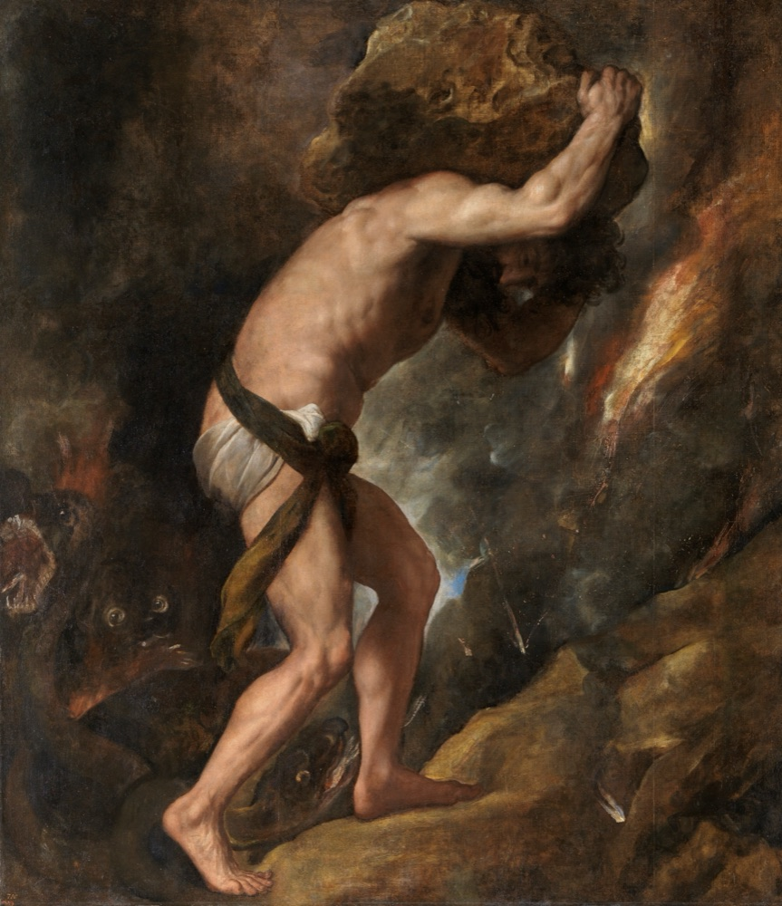

Albert Camus said the one serious question is whether life is worth living. His answer was no built-in meaning, no leap of faith, and a man pushing a rock uphill forever, happy.
A distillation /one question, three answers/10 sources/ 16 min read
Wake up, commute, work, eat, sleep, and do it again. Five days, then a short break, then five more. Most people run that loop for forty years and never once stop to ask what it is for, and the not-asking is most of what keeps it livable.
Albert Camus was interested in the morning the question gets through anyway. You are standing on the platform, or rinsing the same plate you rinsed yesterday, and the why arrives without being invited, and you notice you do not have an answer ready. Most of us feel that, flinch, and go back to the plate. Camus wanted to know what happens if you do not flinch.
He opened his book with a sentence that sounds melodramatic until you sit with it.
There is but one truly serious philosophical problem, and that is suicide.The Myth of Sisyphus, opening line
He does not mean only the act. He means the question hiding under it: is this life worth the trouble of living? Decide that, he says, and you have answered the one thing philosophy is actually for. Everything else, whether the universe has three dimensions, whether your mind has nine categories or twelve, comes after.

Titian, Sisyphus (about 1548), one of four paintings of the damned he made for the Habsburgs. Museo del Prado, Madrid; public domain.
Camus wrote the book young, in his twenties, in Paris under German occupation, the same years the camps were running across the border. It is short, and it is really one argument. The universe has no meaning built into it. We spend our whole lives demanding one anyway. That mismatch, he says, between an animal that needs reasons and a world that does not hand them out, is the basic fact of being human. He called it the absurd.
What follows is the essay distilled: what the absurd is, the three things you can do about it, and why Camus thinks two of the three are a dodge. And because this site already has a post about a man who walked into a death camp and came out certain that life has a meaning you can find, the last move here is to put the two of them in one room. Frankl says: find your why. Camus says: there is no why, and you can live anyway. That argument is the whole point.
The diagnosis
The absurd is a gap, not a mood
Start with what Camus means by the absurd, because the whole essay turns on it and the word has drifted. He does not mean "random," and he does not mean "silly." He means one specific mismatch, and he is precise about it.
On one side, us. We want reasons. We want the world to make sense, to be fair, to add up, to be heading somewhere. We are meaning-seeking animals and we cannot switch it off; even people who say they have made their peace with a pointless universe still flinch when a child dies for nothing. On the other side, the world. It sits there. It does not answer. The sun comes up on the cruel and the kind alike, the good die in car wrecks, and the universe offers no comment at all.
Here is the move that makes Camus Camus: the absurd is not in you, and it is not in the world. It is the collision between the two.
The absurd is born of this confrontation between the human need and the unreasonable silence of the world.The Myth of Sisyphus, "An Absurd Reasoning"
Which means you can make it disappear by killing either side. Stop wanting reasons, go numb, and there is no clash. Decide the world does answer after all, that there is a plan behind the silence, and there is no clash either. Keep both, a creature starving for meaning inside a world that will not feed it, and you have the absurd. The rest of the essay is about what to do once you are honest enough to keep both.
The three answers
What you can do about it
So you have felt it. The week is a loop, the universe will not say why, and you cannot un-feel the gap. What can you actually do? Camus says there are three moves, and he thinks only one of them is honest. The cards below are the three, in his order.
tap a card, or use the arrow keys
Answer one
End it
The first answer is the one his opening line forces you to look at. If life has no built-in meaning, why keep going? Quit. Switch off the animal that keeps asking. Camus takes this seriously, which is the reason the book exists at all, and then he turns it down.
Killing yourself does not solve the absurd, he says. It erases one side of it. The gap between you and the silent world closes only because you are no longer there to feel it. That is not an answer to the question of whether life is worth living. It is deleting the one who asked. He spends the rest of the essay on what it looks like to stay.
Suicide is a repudiation.
The Myth of Sisyphus, "An Absurd Reasoning" (O'Brien trans.).
Answer two
Decide the silence isn't real
The second answer is the popular one, and Camus respects it more, then rejects it harder. You feel the absurd, the silence, the no-reply, and you make a leap: there is a meaning after all, hidden behind the quiet. God has a plan. The universe is just. It all evens out, if not here then somewhere.
Camus has a cold name for that move. He calls it philosophical suicide. You have not faced the absurd, you have killed it, by quietly deciding away the half where the world stays silent. His main example is Kierkegaard, who felt the absurd as sharply as anyone alive and then turned it into God. To Camus that is the same escape as the first card, performed on your mind instead of your body. And note what he is not saying. He is not saying God is a fairy tale, or that the believer is a fool. He is saying that once you have honestly seen the silence, you do not get to un-see it because the alternative is unbearable. That is not courage. It is a flinch.
He makes of the absurd the criterion of the other world, whereas it is simply a residue of the experience of this world.
On Kierkegaard, "An Absurd Reasoning" (O'Brien trans.).
Answer three
Keep both, and live anyway
The third answer is the one Camus is actually selling, and it is the hardest to hold, because it asks you to not resolve anything. Do not quit. Do not pretend. Stay in the gap with your eyes open. Keep wanting meaning, keep noticing the world will not supply it, and refuse to paper over either half. He calls this revolt.
It is not a tantrum and it is not despair. It is closer to a steady, wide-awake defiance: I know this is absurd, I know no rescue is coming, and I am going to live anyway, all the way, without lying to myself about the odds. The strange payoff, Camus says, is that this is the thing that gives a life its weight. A person who expects no reward and throws himself in anyway has a freedom the believer never gets. Nothing is owed to him, so everything he does is his own.
That revolt gives life its value.
The Myth of Sisyphus, "An Absurd Reasoning" (O'Brien trans.).
The picture
Living without appeal, and the rock
Camus has a phrase for what revolt feels like from the inside. He says the goal is to live without appeal. An appeal is what you file when you believe there is a higher court. The believer appeals to God, the optimist appeals to progress, the romantic appeals to destiny, the worker appeals to a payoff down the road. To live without appeal is to stop filing. No higher court is going to hear the case. This life, exactly as it is, is the whole of it, and you take it on those terms or not at all.
Which is where the rock comes in, and the title of the book.
Sisyphus was a king in Greek myth, and a con man. He cheated the gods and gave away their secrets, and, the part Camus loves, he once put Death itself in chains, so that for a while nobody on earth could die at all. When the gods finally got him down to the underworld, he talked his way back out on a technicality and lived years more by the warm sea before they hauled him back for good. So they built him a punishment shaped to the crime: roll a boulder up a mountain, watch it roll back down, and start again, forever. The cleverest man alive, sentenced to the most pointless labor anyone could imagine.
Here is Camus's move, and it is the whole book in one image. Everyone pictures Sisyphus straining up the slope. Camus is interested in the walk back down. That is the moment the man has nothing to push, when he can see his whole fate laid out plain: this, again, forever, no end and no reward. He knows exactly what he is in for. And Camus says it is right there, in the knowing, that he wins.
Because the gods can hand Sisyphus the rock, but they cannot make him hate it. He can own it instead. He can decide that the rock is his, the mountain is his, the struggle is his, and deny them the one thing they were after, which was his despair. There is no fate, Camus says, that cannot be surmounted by scorn. That is revolt with a body. Not hope, not rescue, just a man who looked at a meaningless task and chose to put his whole heart into it on his own terms.
The struggle itself toward the heights is enough to fill a man's heart. One must imagine Sisyphus happy.The Myth of Sisyphus, the last lines
The argument
Camus and the man who found a why
If the setup sounds familiar, it should. A few years after Camus published this, a Viennese psychiatrist named Viktor Frankl came out of the Nazi camps and wrote a short book making nearly the opposite case, and this site has a post about it. The two are worth standing side by side, because they were chewing on the same question in the same decade and came back pointing different directions.
Frankl's claim is that meaning is real and you can find it, even in the worst place human beings ever built. The men who held on in the camps, he says, were the ones who still had a why: someone waiting, a task unfinished, a reason. His whole therapy is built on the idea that there is a meaning available to your life, and that finding it is the deepest thing you do.
Camus says there is no meaning to find. The universe never put one there. And here is where they really collide: Camus would look at Frankl's meaning and ask where it came from. If you found a meaning the silent universe never supplied, did you find it, or did you make it up because the alternative was unbearable? That is the leap again. That is philosophical suicide with a doctorate.
But that is too fast, and it is not fair to Frankl, so here is the honest version. Frankl is not really claiming the cosmos has a built-in purpose with his name on it. His meaning is smaller and more human than that: this person, this work, this is what I will live for, here, now. He is not appealing to a higher court so much as picking a direction inside a world that does not pick one for you. Put it that way and the two men are standing closer than they first look.
Look at what they agree on. Both say suicide is the wrong answer. Both say the one thing nobody can strip from you is the stance you take toward your own situation, Frankl's last of the human freedoms, Camus's revolt. Both wrote out of the same fire: Frankl was deported in 1942, the year Camus's book came off the presses in occupied Paris.
Where they genuinely part is temperament, and the gap is not small. Frankl needs the why. His wager is that you cannot carry the how without one, that a man with no reason goes under fast. Camus's entire point is that you can carry it with no why at all, that you can stare straight at the meaninglessness and shoulder the rock regardless, and that doing it with no reason is the braver of the two.
The fine print, up front
Where Camus is on thin ice
A book this loved deserves to be pushed on, so here is where the argument wobbles, and what is left standing after.
First, a label to drop. Camus is usually shelved under "existentialism," next to Sartre, and he disliked that for the rest of his life. He said so plainly and broke with Sartre in public a decade later. He did not think he was building a system, and he did not trust reason enough to want one. Call it the philosophy of the absurd, which is the name he gave it.
The bigger problem is at the finish line, and sharp readers have leaned on it for eighty years. Camus opens by insisting he cannot know anything: no meaning, no values, the universe is silent and judgments are off the table. Then he spends his last chapter telling you the defiant life is better than the dodge, that the struggle is "enough," that you should imagine Sisyphus happy. Those are value judgments. Where did they come from, if the universe is silent?
The objection
He cheats at the end. Having ruled out every reason for preferring one life to another, he turns around and prefers one hard, and recommends it to you with real warmth. He smuggles a meaning back in through the side door, the exact crime he convicted Kierkegaard of one chapter earlier. The Stanford Encyclopedia of Philosophy says it cleanly: at the decisive moment the philosopher gives way to the artist, and Camus stops proving things and starts asserting them, beautifully.
What survives it
It is a real hole, and you can feel him jump it with a sentence rather than an argument. What Camus has is not a proof that the defiant life is correct. It is a wager that it is the only one worth living, placed by a man who found the alternatives, quitting and pretending, beneath him. Read it as that: a stance offered, not a theorem closed. It does not tell you that revolt is true. It shows you a way to stand that a lot of clear-eyed people have found they could live inside.
One more, on the famous line. The philosopher Thomas Nagel argued that Camus oversells the drama, that if life really is absurd, the fitting response might be a shrug and a little irony, not heroic rock-pushing. It is a fair hit; Camus's Sisyphus is a touch operatic. But the operatic version is the one people carry around, because it hands you something to do on Monday with the same plate and the same commute, and a shrug does not.
The fine print
Sources, and a note on the quotes
This is a distillation of one essay, told in my own words; the ideas are Camus's. Quotes are kept short and reproduced for study and comment, checked against the Justin O'Brien translation and cited by chapter. Where the original uses an em dash, the site does not, so it is shown with a comma instead, with no change to the words. No em dashes, anywhere.
The full list, 10 sources
Albert Camus.The Myth of Sisyphus and Other Essays. Trans. Justin O'Brien. Vintage Books (1991 printing; the O'Brien translation first published by Knopf, 1955). The source for everything quoted here. archive.org
The original. First published in French in 1942 by Librairie Gallimard as Le Mythe de Sisyphe, written in Paris during the German occupation. The structure is four chapters ("An Absurd Reasoning," "The Absurd Man," "Absurd Creation," "The Myth of Sisyphus") plus an appendix on Franz Kafka. overview
The one serious problem. The opening line and the framing of suicide as the fundamental question are in chapter one, "An Absurd Reasoning," section "Absurdity and Suicide."
The absurd as a confrontation. "The absurd is born of this confrontation between the human need and the unreasonable silence of the world" closes the section "Absurd Walls"; "the absurd is essentially a divorce" opens "Philosophical Suicide."
Philosophical suicide, and Kierkegaard. Camus names the leap "philosophical suicide" and works through Kierkegaard, Chestov (Lev Shestov), Jaspers, and Husserl in the section "Philosophical Suicide."
Revolt, freedom, and "without appeal." The three consequences of the absurd, the line "that revolt gives life its value," and the wish "to live without appeal" are in the section "Absurd Freedom."
The myth. The final chapter, "The Myth of Sisyphus," including the closing "one must imagine Sisyphus happy." Camus draws the crimes (giving away the gods' secrets, chaining Death, the trick that won him a return to earth) from Homer's Odyssey XI and later tradition. the myth sources
The objection at the end. That Camus moves from a skeptical premise to a positive recommendation, "the philosopher gives way to the artist," is drawn from the SEP entry above; the irony-not-heroism line is Thomas Nagel, "The Absurd," Journal of Philosophy 68.20 (1971). Nagel
The painting. Titian (Tiziano Vecellio), Sisyphus, about 1548, oil on canvas, one of the "Furias" painted for Mary of Hungary. Museo del Prado, Madrid; public domain, via Wikimedia Commons; cropped for the card and the link preview. The counterpart post is Viktor Frankl, Man's Search for Meaning.
{kind=link}